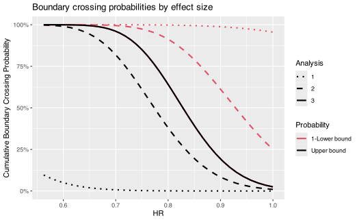
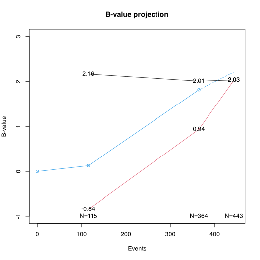

Basic time-to-event group sequential design using gsSurv
Source:vignettes/gsSurvBasicExamples.Rmd
gsSurvBasicExamples.RmdIntroduction
This article/vignette provides a basic time-to-event endpoint designs
for fixed designs using nSurv() and group sequential
designs using gsSurv(). Some detail in specification comes
with the flexibility allowed by the Lachin and
Foulkes (1986) method for sample size under a proportional
hazards model with piecewise constant enrollment, piecewise exponential
failure and dropout rates. Users may also be interested in the Shiny interface as a
learning tool. We only use the simplest options here with a single
stratum and exponential failure and dropout rates; see the help file for
gsSurv() for examples with a stratified population or
piecewise exponential failure.
We apply the Lachin and Foulkes (1986)
sample size method and extend it to group sequential design. This method
fixes the duration of a study and varies enrollment rates to power a
trial. We also use the Lachin and Foulkes
(1986) basic power calculation to compute sample size along the
lines of Kim and Tsiatis (1990) where
enrollment rates are fixed and enrollment duration is allowed to vary to
enroll a sufficient sample size to power a study. For post-design power
sensitivity calculations, see the vignette Power Computation for
Group Sequential Survival Designs for gsSurvPower().
For a SAS PROC SEQDESIGN translation example, see the vignette
Reproducing SAS PROC SEQDESIGN survival designs in
gsDesign.
Fixed design derivation
Since the parameters used for a design with no interim are also used for a group sequential design, we first specify and derive a design with no interim analysis.
Outcome and dropout distributions
We begin with information about the median time-to-event in the control group, dropout rate, hazard ratios under the null and alternate hypotheses for experimental therapy compared to control, and the desired Type I and II error rates.
# Median control time-to-event
median <- 12
# Exponential dropout rate per unit of time
eta <- .001
# Hypothesized experimental/control hazard ratio
# (alternate hypothesis)
hr <- .75
# Null hazard ratio (1 for superiority, >1 for non-inferiority)
hr0 <- 1
# Type I error (1-sided)
alpha <- .025
# Type II error (1-power)
beta <- .1Enrollment and trial duration
Next, we plan the trial duration and the enrollment pattern. There are two basic methods for doing this. The Lachin and Foulkes (1986) method demonstrated here fixes the enrollment pattern and duration as well as the trial duration and changes the absolute enrollment rates to obtain desired power. The alternate recommended method is along the lines of Kim and Tsiatis (1990), fixing the enrollment rates and follow-up duration, varying the total trial duration to power the design; this will also be demonstrated below.
Deriving design with no interim analyses
The above information is sufficient to design a trial with no interim
analyses. Note that when calling nSurv(), we transform the
median time-to-event (\(m\)) to an
exponential event rate (\(\lambda\))
with the formula \[\lambda=\log(2)/m.\]
library(gsDesign)
x <- nSurv(
R = R,
gamma = gamma,
eta = eta,
minfup = minfup,
T = T,
lambdaC = log(2) / median,
hr = hr,
hr0 = hr0,
beta = beta,
alpha = alpha
)A textual summary of this design is given by printing it. For the group sequential design shown later, much more complete formatted output will be shown.
x
#> nSurv fixed-design summary (method=LachinFoulkes; target=Accrual rate)
#> HR=0.750 vs HR0=1.000 | alpha=0.025 (sided=1) | power=90.0%
#> N=775.0 subjects | D=507.2 events | T=36.0 study duration | accrual=24.0 Accrual duration | minfup=12.0 minimum follow-up | ratio=1 randomization ratio (experimental/control)
#>
#> Key inputs (names preserved):
#> desc item
#> Accrual rate(s) gamma
#> Accrual rate duration(s) R
#> Control hazard rate(s) lambdaC
#> Control dropout rate(s) eta
#> Experimental dropout rate(s) etaE
#> Event and dropout rate duration(s) S
#> value
#> 9.282, 13.923, 23.205 ... (len=4)
#> 1, 2, 3 ... (len=4)
#> 0.058
#> 0.001
#> 0.001
#> NULL
#> input
#> 1, 1.5, 2.5 ... (len=4)
#> 1, 2, 3 ... (len=4)
#> 0.058
#> 0.001
#> etaE
#> SGroup sequential design
Now we move on to a group sequential design.
Additional parameters
All the parameters above are used. We set up the number of analyses, timing and spending function parameters. These deserve careful attention for every trial and tend to be somewhat customized to be fit-for-purpose according to all those involved in designing the trial. Here the choices considered the following:
- There is an early look intended primarily for futility
- There is no desire to stop this early for lack of a positive trend
- An earlier interim might be too soon to stop for a meaningful safety problem
- There is no desire to stop for efficacy, so the extreme effect size and p-value required to cross the bound is considered appropriate
- The second interim is primarily for efficacy
- The data will be relatively mature, but a meaningful length of time before planned final analysis
- The treatment effect at the efficacy bound will likely be at least the treatment effect used to power the trial
- The Lan-DeMets spending function approximating an O’Brien-Fleming bound Lan and DeMets (1983) is often acceptable to regulators for early stopping
# Number of analyses (interim + final)
k <- 3
# Timing of interim analyses (k-1 increasing numbers >0 and <1).
# Proportion of final events at each interim.
timing <- c(.25, .75)
# Efficacy bound spending function.
# We use Lan-DeMets spending function approximating O'Brien-Fleming bound.
# No parameter required for this spending function.
sfu <- sfLDOF
sfupar <- NULL
# Futility bound spending function
sfl <- sfHSD
# Futility bound spending parameter specification
sflpar <- -7Type II error (1-power) may be set up differently than for a fixed design so that more meaningful futility analyses can be performed during the course of the trial.
# Type II error = 1 - Power
beta <- .15Textual summary
The design summary is:
Asymmetric two-sided group sequential design with non-binding futility bound, 3 analyses, time-to-event outcome with sample size 676 and 443 events required, 85 percent power, 2.5 percent (1-sided) Type I error to detect a hazard ratio of 0.75. Enrollment and total study durations are assumed to be 24 and 36 months, respectively. Efficacy bounds derived using a Lan-DeMets O’Brien-Fleming approximation spending function (no parameters). Futility bounds derived using a Hwang-Shih-DeCani spending function with gamma = -7.
An important addition not provided above is that the median time-to-event is assumed to be 12 months in the control group.
Tabular summaries
Following are the enrollment rates required to power the trial.
library(lt)
library(tibble)
tibble(
Period = paste("Month", rownames(x$gamma)),
Rate = as.numeric(x$gamma)
) |>
lt() |>
lt_header(title = "Enrollment rate requirements")Next we provide a tabular summary of bounds for the design. We have
added extensive footnoting to the table, which may or may not be
required for your design. However, as seen here it makes many choices
for design parameters and properties transparent. No attempt has been
made to automate this, but it may be worth considering for a template if
you wish to make the same choice across many trials. Note that the
exclude argument for gsBoundSummary() allows
additional descriptions for design bounds such as conditional or
predictive power; see the help file for details or just provide
exclude = NULL to gsBoundSummary() to see all
options.
# Footnote text for table
footnote1 <- "P{Cross} is the probability of crossing the given bound (efficacy or futility) at or before the given analysis under the assumed hazard ratio (HR)."
footnote2 <- " Design assumes futility bound is discretionary (non-binding); upper boundary crossing probabilities shown here assume trial stops at first boundary crossed and thus total less than the design Type I error."
footnoteHR <- "HR presented is not a requirement, but an estimate of approximately what HR would be required to cross each bound."
footnoteM <- "Month is approximated given enrollment and event rate assumptions under alternate hypothesis."
# Spending function footnotes
footnoteUS <- "Efficacy bound set using Lan-DeMets spending function approximating an O'Brien-Fleming bound."
footnoteLS <- paste(
"Futility bound set using ", x$lower$name, " beta-spending function with ",
x$lower$parname, "=", x$lower$param, ".",
sep = ""
)
# Caption text for table
caption <- paste(
"Overall survival trial design with HR=", hr, ", ",
100 * (1 - beta), "% power and ",
100 * alpha, "% Type I error",
sep = ""
)
gsBoundSummary(x) |>
lt() |>
lt_header(title = "Time-to-event group sequential design") |>
lt_align(columns = c("Analysis", "Value", "Efficacy", "Futility"), align = "left") |>
lt_footnote(footnoteUS, where = "column", columns = "Efficacy") |>
lt_footnote(footnoteLS, where = "column", columns = "Futility") |>
lt_footnote(footnoteHR, where = "body", columns = "Value", rows = c(3, 8, 13)) |>
lt_footnote(footnoteM, where = "body", columns = "Analysis", rows = c(4, 9, 14)) |>
lt_footnote(footnote1, where = "body", columns = "Value", rows = c(4, 5, 9, 10, 14, 15)) |>
lt_footnote(footnote2, where = "body", columns = "Value", rows = c(4, 9, 14))Summary plots
Several plots are available to summarize a design; see help for
plot.gsDesign(); one easy way to see how to generate each
is by checking plots and code generated by the Shiny interface. The
power plot is information-rich, but also requires some explanation;
thus, we demonstrate here.
The solid black line represents the trial power by effect size. Power at interim 1 is represented by the black dotted line. Cumulative power at interim 2 is represented by the black dashed line. The red dotted line is 1 minus the probability of crossing the futility bound on the percentage scale. The red dashed line is 1 minus the cumulative probability of crossing the futility bound by interim 2.
library(ggplot2)
library(scales)
plot(x, plottype = "power", cex = .8, xlab = "HR") +
scale_y_continuous(labels = scales::percent)
Update bounds at time of analysis
Analyses rarely occur at exactly the number of events which are planned. The advantage of the spending function approach to design is that bounds can be updated to account for the actual number of events observed at each analysis. In fact, analyses can be added or deleted noting that any changes in timing or analyses should not be made with knowledge of unblinded study results. We suggest tables and a plot that may be of particular use. We also present computation of conditional and predictive power.
First, we update the actual number of events for interims 1 and 2 and assume the final analysis event count is still as originally planned:
The simple updates to Z-values and p-values for the design based on information fraction just requires the fraction of final events planned, but does not include the number of events or treatment effect in the output:
xu <- gsDesign(
alpha = x$alpha, beta = x$beta, test.type = x$test.type,
maxn.IPlan = x$n.I[x$k], n.I = n.I,
sfu = sfu, sfupar = sfupar, sfl = sfl, sflpar = sflpar,
delta = x$delta, delta1 = x$delta1, delta0 = x$delta0
)Now we print the design summary, selecting minimal calculations for a
table to provide guidance for review of results. If you wish to see all
possible summaries of bounds, change to exclude = NULL
below. Here we have assumed futility guidance is based on the hazard
ratio at interim analysis; this is not generally the case, but is an
option as these bounds are guidance rather than having strict
inferential interpretation.
gsBoundSummary(
xu,
deltaname = "HR",
logdelta = TRUE,
Nname = "Events",
exclude = c(
"Spending", "B-value", "CP", "CP H1",
"PP", "P(Cross) if HR=1", "P(Cross) if HR=0.75"
)
) |>
lt() |>
lt_align(columns = c("Analysis", "Value", "Efficacy", "Futility"), align = "left") |>
lt_header(
title = "Time-to-event group sequential bound guidance",
subtitle = "Bounds updated based on event counts through IA2"
) |>
lt_footnote(
"Nominal p-value required to establish statistical significance.",
where = "body", columns = "Efficacy", rows = c(2, 5, 8)
) |>
lt_footnote(
"Interim futility guidance based on observed HR is non-binding.",
where = "body", columns = "Futility", rows = c(3, 6)
) |>
lt_footnote(
"HR bounds are approximations; decisions on crossing are based solely on p-values.",
where = "body", columns = "Value", rows = c(3, 6, 9)
)
#> Warning: gsBoundSummary: hr0 is not present; using hr0 =
#> 1 for HR at bound calculations.Evaluating interim results
We recommend 3 things to present to summarize results in addition to standard summaries such as the logrank p-value, hazard ratio based on the Cox model, median time-to-event and Kaplan-Meier curves by treatment group.
- Conditional power at the current trend, under the null hypothesis of no treatment difference (conditional error), and under the alternative hypothesis.
- Predictive power, which is conditional power averaged over a posterior distribution for the treatment effect.
- A B-value plot to evaluate the trend in test statistics towards a positive conclusion.
For these summaries, we will assume the updated interim event counts used above along with interim Z-values of 0.25 and 2 at interim 1 and interim 2, respectively.
Z <- c(0.25, 2)Conditional power at interim analysis 2 is computed for the current trend, under the null hypothesis (HR=1), and under the alternate hypothesis (HR=0.75 in this case) as follows:
gsCP(
x = xu, # Updated design
i = 2, # Interim analysis 2
zi = Z[2] # Observed Z-value for testing
)$upper$prob
#> [,1] [,2] [,3]
#> [1,] 0.6599398 0.301728 0.7764629Predictive power incorporates uncertainty into the above conditional
power evaluation. The computation assumes a prior distribution for the
treatment effect and then updates to a posterior distribution for the
treatment effect based on the most recent interim result. The
conditional probability of a positive finding is then averaged according
to this posterior. We specify a normal prior for the standardized effect
size using the gsDesign::normalGrid() function. We select a
weak prior with mean half-way between the alternative
(x$delta) and null (0) hypotheses and a variance equivalent
to observing 5% (=1/20) of the targeted events at the final analysis;
the following shows that the standard deviation for the prior is well
over twice the mean, so the prior is relatively weak.
prior <- normalGrid(
mu = x$delta / 2,
sigma = sqrt(20 / max(x$n.I))
)
cat(paste(
" Prior mean:", round(x$delta / 2, 3),
"\n Prior standard deviation", round(sqrt(20 / x$n.fix), 3), "\n"
))
#> Prior mean: 0.072
#> Prior standard deviation 0.215Now based on the interim 2 result, we compute the predictive power of a positive final analysis.
gsPP(
x = xu, # Updated design
i = 2, # Interim analysis 2
zi = Z[2], # Observed Z-value for testing
theta = prior$z, # Grid points for above prior
wgts = prior$wgts # Weights for averaging over grid
)
#> [1] 0.6407376A B-value (Proschan et al. (2006)) is a Z-value multiplied by the square root of the information fraction (interim information divided by final planned information. In the plot below on the B-value scale, we present the efficacy bounds at each analysis in black, futility guidance in red, the observed interim tests in blue connected by solid lines, and a dashed blue line to project the final result. Under a constant treatment effect (proportional hazards for a time-to-event outcome tested with a logrank test) the blue line behaves like observations from a Brownian motion with a linear trend (“constant drift”). While a comparable Z-value plot would have the effect increasing with the square root of the number of events, the B-value plot trend is linear in the event count. The trend is proportional to the logarithm of the underlying hazard ratio. The projected final test is based on the dashed line which represents a linear trend based on the most recent B-value computed; this projection is what was used in the conditional power calculation under the current trend that was computed above.
maxx <- 450 # Max for x-axis specified by user
ylim <- c(-1, 3) # User-specified y-axis limits
analysis <- 2 # Current analysis specified by user
# Following code should require no further changes
plot(
xu,
plottype = "B", base = TRUE, xlim = c(0, maxx), ylim = ylim, main = "B-value projection",
lty = 1, col = 1:2, xlab = "Events"
)
N <- c(0, xu$n.I[1:analysis])
B <- c(0, Z * sqrt(xu$timing[1:analysis]))
points(x = N, y = B, col = 4)
lines(x = N, y = B, col = 4)
slope <- B[analysis + 1] / N[analysis + 1]
Nvals <- c(N[analysis + 1], max(xu$n.I))
lines(
x = Nvals,
y = B[analysis + 1] + c(0, slope * (Nvals[2] - Nvals[1])),
col = 4,
lty = 2
)